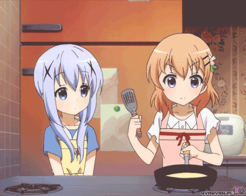

Palačinky

Ingredience
| 200 g hladké mouky |
| 400 ml mléka |
| 2 vejce |
| špetka soli |
| troška másla |
| milá osoba k nakrmení (není nutností) |
Příprava
1. Všechny ingredience mícháme metličkou, dokud nám nevznikne hustá směs.
2. Na pánev s rozpuštěným máslem vlijeme jednu malou naběračku směsi.
Palačinku smažíme z obou
stran dozlatova.
3. Palačinky naskládáme na sebe, jednotlivé vrstvy prokládáme kousky másla.
4. Podle chuti polijeme syrupem či posypeme moučkovým cukrem.
5. Pokud máme k dispozici někoho milého a hladového, můžeme ho palačinkami
nakrmit.